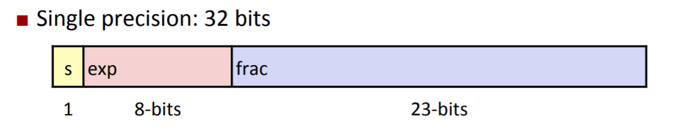
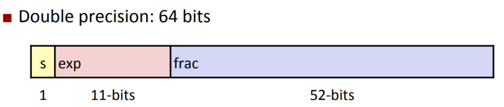
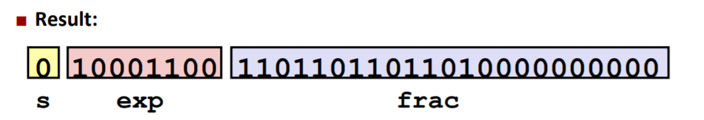

Data Lab 都是与位运算相关的一些题目，总共有13个题。每个题都是按要求实现一个函数，题目中规定了可以使用的操作符（不能使用规定之外的操作），并对使用次数作出了限制，要求就是用这些给定的操作符，在一定次数内，完成函数所要实现的功能。
整数部分
1. bitXor
1 | /* |
这一题要用 ~ 和 & 两个符号实现两个数的 异或 操作。
思路： 通过逆向法，使用一个各个 bit 均为 1 的数 $ans = (2^{31}-1)$，找出 x, y 相应位置均为 1 的 bit 和 x, y 相应位置均为 0 的 bit，在 ans 中这些 bit 设为 0，剩余的结果即为 x ^ y。
上面代码中，allOne = ~(x & y) 相当于 $(2^{31} - 1)$ 排除掉 x, y 相应位置均为 1 的 bit 后的结果；allZero = ~(~x & ~y) 是将 x, y 相应位置均为 0 的 bit 设置为 0 ，其它位置设为 1；allOne 再通过与 allZero 按位 and 后便将 x, y 均为 0 的 bit 排除掉了，剩下的便是 x ^ y 。
2. tmin
1 | /* |
返回二进制补码表示中最小的数。
最小的数就是 符号位为1，其余位为0，也就是 $INT_MIN = -2^{31}$。
3. isTmax
1 | /* |
判断一个数是否为二进制补码表示中最大的数。
最大的数就是 符号位为0，其余为均为1，也就是 INT_MAX = ~(1<<31) 。
4. allOddBits
1 | /* |
判断一个数的二进制的奇数位是否均为1。
思路：构造一个奇数位均为1，偶数位均为0的二进制数：0xAAAAAAAA 。将该数与 x 按位 and，若得到结果为 0xAAAAAAAA ，则该数的奇数二进制位均为1.
因为最终要返回 0 或 1，所以再将结果与 0xAAAAAAAA 异或并使用 ! 取否，将结果变为 0 或 1。
5. negate
1 | /* |
求 -x。
将 x 按位取反，末位 +1 即可。
6. isAsciiDigit
1 | /* |
判断 x 是否是 ASCII 中的数字字符。
思路：ASCII 数字字符的范围是 $48 \leq x \leq 57$ ，因此只需要判断 $x$ 是否在该范围即可。
将上面的左右区间各扩大 1 ，得到 $x$ 的范围为 $47 < x < 58$ 。若 $x$ 是一个数字字符，那么 $x - 47 > 0$ 且 $x - 58 < 0$ 。
分别计算出 $x - 47$ 的结果 left 和 $x - 58$ 的结果 right 。left 的符号位需要为0 并且 left 本身不能为 0，right 的符号位需要为 1。
7. conditional
1 | /* |
实现三目运算符 x ? y : z 。
思路：首先通过 !!x 将 x 变为 0 或 1 ，然后通过 ~x + 1 将 x 变为 0x00000000 或 0xffffffff 。当 x = 0 时，~x + 1 = 0x00000000；当 x = 1 时，~x + 1 = 0xffffffff 。
(x & y) + (~x & z) 根据 x 的不同会等于 y 或 z 。
8. isLessOrEqual
1 | /* |
实现 $\leq$ 运算符。
思路： 这个题的关键是判断 $x - y$ 是否 $\leq $ 0 。基本思路是首先计算出 $x-y$ 的值，然后判断结果是否为 0 或者是否为负数（符号位为1）。
然而，这个题会出现运算溢出的情况，当 $x$ 与 $y$ 不同号时，二者相减可能会超出 int 的范围，因此需要特殊处理 $x$ 与 $y$ 不同号的情况。
9. logicalNeg
1 | /* |
实现 ! 运算符。
思路： 这个题的关键时判断 x 的二进制表示中是否含有 1 。这个解法是从网上看到的一个，比较巧妙。他用了类似分治的方法，将前16位的1放到后16位中，再将后16位中前8位的1放到后8位中，再将后8位中前4位的1放到后4位中，以此类推。若 x 的二进制表示中含有1，经过这一系列变化后，x 的二进制最后一位一定为 1 .
10. howManyBits
1 | /* howManyBits - return the minimum number of bits required to represent x in |
将一个数用补码表示最少需要几个bit？
浮点数部分
首先复习下浮点数的相关概念。
在计算机中，浮点数以 “阶码—尾数” 的方式进行表示，一个浮点数可以写成如下形式
其中，$s$ 是一个符号位，标识了浮点数的正负，其取值为 $0$ 或 $1$，当 $s = 0$ 时，浮点数为正数，当 $s = 1$ 时，浮点数为负数。
$M$ 为尾数，其取值范围为 $[1.0, 2.0)$ ，$E$ 为阶码，这两个参数可以类比十进制中的科学计数法表示。例如，对于二进制数 $x = 1001$，将其表示成上述方式后为 $x = (-1)^0 \ast 1.001 \ast 2^3$。
C语言的浮点数类型有两种：32位的 float 和 64位的 double，这些 bit 存储了上面的符号位 $s$、阶码 $E$ 和 尾数 $M$，double 能够表示的浮点数的范围和精度都要比 float 大。
float 是单精度浮点数，如下图所示，在它的 32 位中，最高 1 位是符号位，后 8 位是阶码位 ，最后 23 位是尾数位。

double 是双精度浮点数，如下图所示，在它的 64 位中，最高 1 位是符号位，后 11 位是阶码位，最后 52 位是尾数位。

对于阶码 $E$ 和尾数 $M$ ，float 和 double 在存储时会将其进行一定编码后存储，如上图中的 exp 和 frac 存储的就是经过编码后的阶码和尾数。例如，对于阶码 $E$，在编码时会将其加上一个偏差 bias，也就是说， exp = E + bias；
而根据 exp 取值的不同，可将浮点数分类 规格化(Normalized)浮点数 和 非规格化(Denormalized)浮点数 两大类。
当 exp != 000...0 并且 exp != 111...1 时，浮点数为规格化浮点数。
规格化浮点数中，阶码 $E$ 的偏差 bias 等于 $2^{k-1} - 1$ ，其中 $k$ 为 阶码位的位数。对于
float来说，$k = 8$， $bias = 2^{8-1}-1 = 127$；对于double来说，$k = 11$，$bias = 2^{11-1}-1=1023$。尾数 $M$ 为 $1.xxx…x_2$，因为规格化浮点数的尾数都是一点几，所以在存储时，会舍弃掉最前面那个大家都有的 $1$，不足 23 位的要添加后导零补齐23位。也就是说，frac 中存储的是 $xxx…x_2$，并添加后导零补齐23位。
举个栗子，我们看一下十进制数 15213 存储在 float 中是什么样的。
- 首先将其写成阶码-尾数的方式
$M = 1.1101101101101$，去掉最前面的 1，将剩余的数添加后导零补齐23位，得到 frac 的值
$E = 13$，添加 bias = 127 后，得到 exp 的值：$exp = 17 + 127 = 140 = 1001100_2$
最终得到32位的 float 如下图所示

- 由于规格化浮点数中 $1 \leq M < 2$，所以其无法表示 $0$
当 exp = 000...0 时，这是非规格化浮点数的一种，这时用来表示特别小的数。
- 阶码 $E = 1 - bias$ 而不是 $0 - bias$
- 尾数 $M = 0.000…0_2$，没有前面的 1 了。
- 这种情况可以表示 0 了，当
exp = 000...0且frac = 000...0时，浮点数为 0。但是，这时根据 符号位$s$ 的不同会出现 $+0$ 和 $-0$ 两种情况。
当 exp = 111...1 时，这是非规格化浮点数的另一种，这时用来表示无穷大或NaN。
- 当
frac = 000...0时，表示 $\infty$ 。例如，$1.0 / 0.0 = -1.0 / 0.0 = +\infty, 1.0 / -0.0 = -\infty$ - 当
frac != 000...0时，表示 NaN（Not-a-Number）。例如，$\sqrt{-1} = NaN$
浮点数相关的三个题目要求就比较松了，可以使用条件判断和循环，可以使用任何符号，定义任意大小的常数，但是不可以使用 float 和 double 。
1. float_twice
1 | /* |
计算 2 乘以 一个浮点数。浮点数为 float，以 32 位 unsigned 的形式给出。
思路： 这个题主要考察浮点数的基本表示方法。首先排除无穷大、NaN 的情况，这两种情况直接返回原参数即可。对于 exp = 0 的情况，直接将原参数乘以2并保留符号位即可。对于规格化浮点数的情况，乘以2 相当于 阶码加1，由于阶码在第23位，因此其加1就相当于 uf + (1 << 23) 。若阶码加1后变为 0xff，此时的结果应为无穷大，而不是 NaN，因此需要将后23位的尾数位都设为0。
3. float_f2i
1 | /* |
将一个单精度浮点数转换为整数（向下取整，截断小数位）。
思路： 这个题不难，只需要提取出 符号位 $s$，阶码 $E$，尾数 $M$。根据 $ans = (-1)^s \ast M \ast 2^E$，排除掉越界的情况，对不越界的数截断小数点后面的位即可。